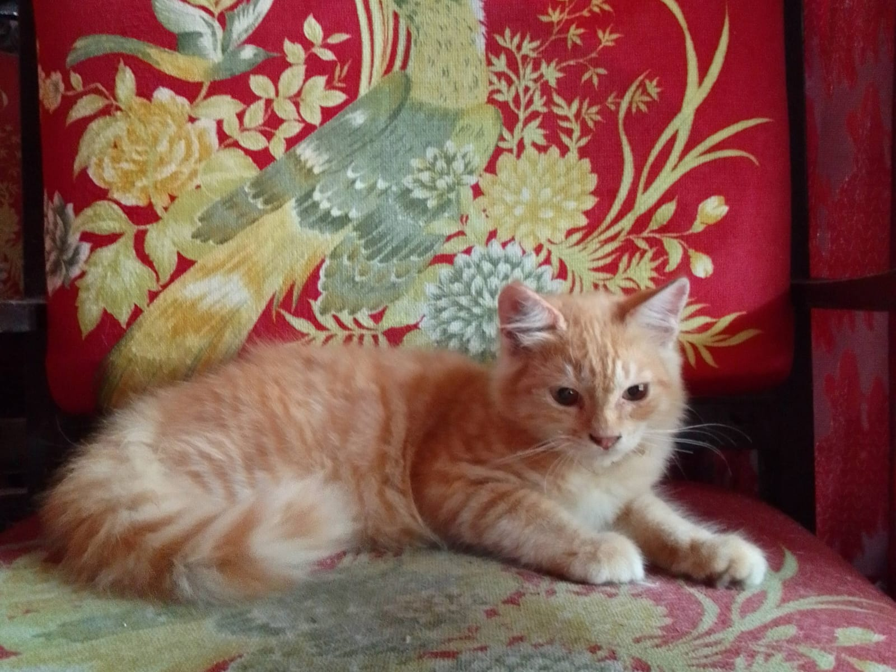
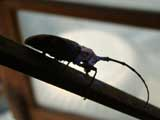

Hai! Aku Dinarroo

Kenalin, namaku Dinarroo tapi orang-orang biasanya manggil aku Naru. Aku mempunyai bulu lebat yang halus dan berwarna oren kekuningan.
Kata banyak orang, kucing oren itu biasanya pasti nakal, tapi aku beda! Aku termasuk kucing yang penurut, tidak pernah berkelahi, dan kalem. Aku jarang bersuara, kecuali saat lapar itupun suaraku lembut banget. Kalau minta makan, aku biasanya mendekat dan mencari perhatian.
Kehidupan Narroo
Hal yang Aku sukai
Aku paling suka makan snack basah, itu makanan kesukaanku! Untuk perawatan, aku mandi seminggu sekali supaya tetap bersih dan sehat. Setelah mandi aku juga diberi minyak wangi supaya selalu harum dan membuat siapapun nyaman denganku. Kemudian aku juga suka tidur di dekat pemilikku apalagi di atas perutnya.
Kegiatanku Sehari-hari

Kalau aku lagi sehat, aku aktif banget. Suka lari-larian dan bermain dengan kucing lain, bahkan kadang iseng mainin ekor mereka. Tapi kalau lagi sakit, aku jadi lemes dan lebih banyak diam. Walaupun begitu, aku kucing yang mandiri karena udah hafal tempat makan, minum, dan selalu pup ditempatnya.